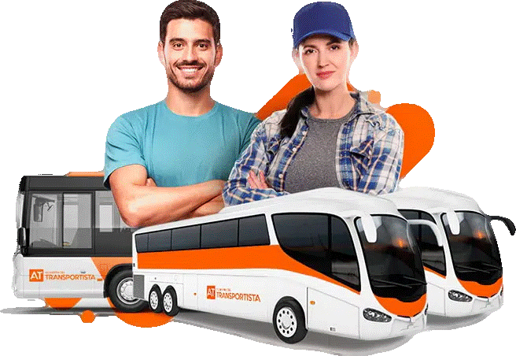

Permiso autobús D
Para conducir un autobús necesitas obtener el permiso tipo D, que es aquel que nos permite conducir autobuses con más de 8 pasajeros, además del propio conductor/a.
También permite llevar un remolque con una Masa Máxima Autorizada de 750 Kg (D + E), aunque no es habitual que un autobús lleve remolque.
Carnet D: Con el permiso D podrás conducir desde autobuses urbanos hasta autorcares que hacen trayectos largos en carreteras interurbanas, autopistas y autovías.
Carnet D: Con el permiso D podrás conducir desde autobuses urbanos hasta autorcares
que hacen trayectos largos en carreteras interurbanas, autopistas y autovías.
Carnet D + E : Nos permite conducir los autobuses más amplios y grandes, además de permitirnos
igualmente transportar un remolque de una MMA de 750 Kg.
Permiso D1 : Permite conducir autobuses de no más de 8 metros de largo y 17 plazas, incluyendo
la del conductor.
Permiso D1 + E: Es igual al permiso D1, pero nos permite llevar un remolque con una MMA de 750 Kg.

REQUISITOS
Para poder obtener el permiso D de autobús, hay que previamente haber obtenido el permiso B. También hay que realizar
una serie de 3 exámenes después de una formación en autoescuelas para demostrar los conocimientos y competencias necesarias,
tanto teóricas como prácticas, para conducir este vehículo específico.
Como pasa con el resto de permisos, el primer examen que hay que realizar y aprobar para obtener el D es uno teórico.
Este examen tendrá 20 preguntas y tendrá que ser superado con un máximo de 2 fallos. Te preguntarán las cosas habituales,
como límites de velocidad, pero esta vez, los límites para este tipo específico de vehículos. Una vez pasado este examen tipo test,
se podrán tomar las clases prácticas para prepararse para las pruebas prácticas de conducir de autobús.
El primer examen práctico será en un circuito cerrado y se basará en examinar la capacidad de maniobrar que tiene el futuro conductor con el autobús,
ya que, al ser vehículos más grandes, los buses requieren una buena capacidad de maniobra.
Cuando se ha superado el primer examen práctico, el alumno podrá realizar el examen en tráfico abierto para que el examinador analice su conducción y comportamiento junto al resto de usuarios de la vía.